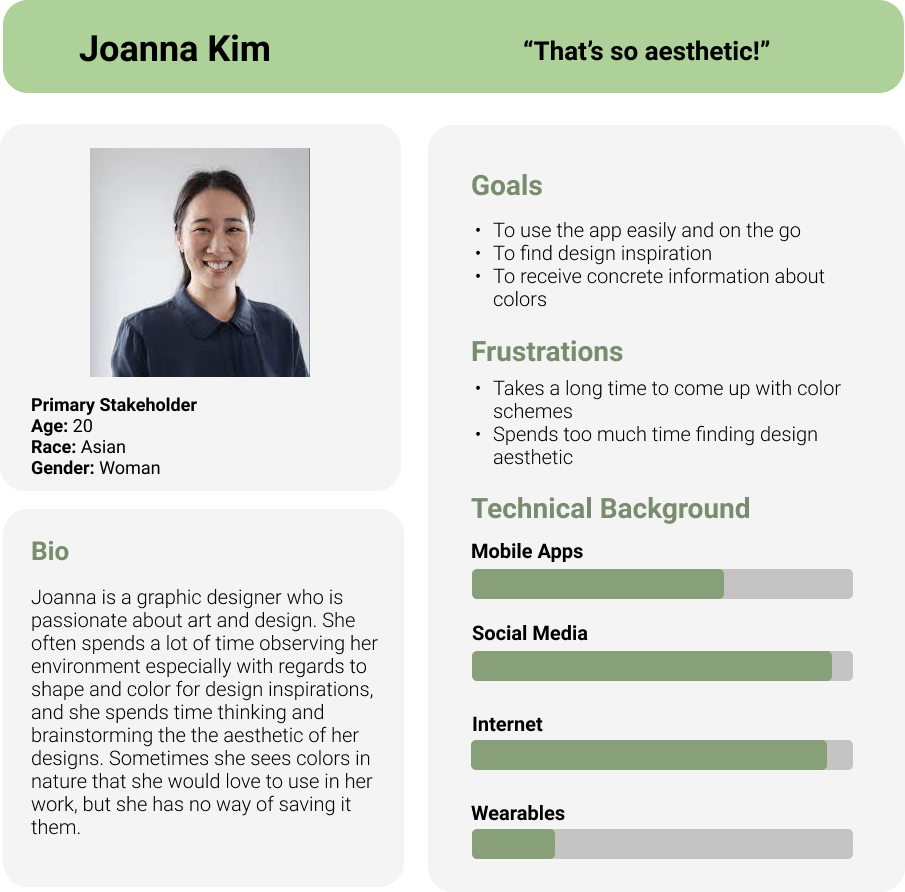
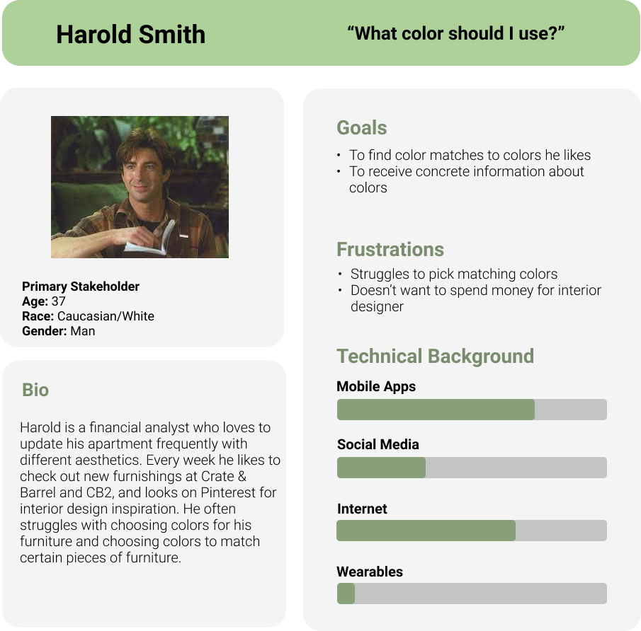

Project Overview
Mantis is a mobile app that identifies colors based off a user-given image. This app aims to help designers and the general population to identify colors they enjoy and provide matching colors to make their design tasks easier. Users would be able to upload or take a picture within the mobile app and select a spot on the picture to generate a specific color. In addition, users would be able to generate a color palette, which produces five additional colors that complement the initial chosen color, and they would be able to save their favorite colors or color schemes in a library.

Design Questions
1. What are ways can we help people and designers make their visual design tasks easier?
2. How can we help people identify specific colors on the go and create color schemes to match?
Research
We began our research by brainstorming who would potentially encounter visual design tasks.
General Population - Suppose you were hiking on a Yosemite trail and you encountered a dainty patch of flowers that was the utmost shade of light purple, but you couldn't really think of a color that best fit the shade. You had to know what the name of the color was in case you'd use it in the near future for a wedding theme or for painting a room, but there was no way to find out.
Design Professionals - This problem also applies to a designer. One of the most important aspects in certain design projects is to choose a color scheme for the projects. If the designer doesn't choose the right color for the design, it can be detrimental to the product. If a designer sees a color they throughout the day, they should be able to identify the color and use it for future designs.
Competitive Analysis
We also surveyed the app store for related work, and we found a few apps that were able to detect colors from pictures, which were helpful; however, we found them to be lacking in ways that specifically answered our design question. We identified the pain points from already made apps and used them to help create design requirements for our app.

The one on the left provides minimal information for the user because it only displays the selected color which does not give the user any other information whatsoever. The app on the right employs AR to identify live colors, which is innovative but problematic because the color identification square is always moving, so users can't pinpoint a single color due to minute movements from the hand.
Also the apps on the app store did not allow for the full range of color. If a user identified at any shade of green it would just identify a basic color like “Green” or “Red” instead of something more specific like “Lime” or “Scarlet”. Along with that, the UI only worsened the usability of those apps, since navigation was not intuitive. I had no idea how to get back to using the camera for Color Name AR.
Design Requirements
From our findings, we generated a list of design requirements we felt that our app should have:
- The solution should allow users to easily pinpoint any specific color on any image.
- The solution should allow users to upload/take pictures easily.
- The solution should give really specific information about a color such as RGB and Hex values.
- The solution should also suggest colors that match a favorite color.
- The solution should allow users to save their favorite colors for later use.
Personas
According to our research, findings, and design requirements we created these personas as to further empathize with our potential users’ needs and frustrations.
|  |  |
Ideation
Conceptual Model
The conceptual design of the app was extremely simplistic and consisted of three main components: the camera, upload, and Color Library. By combining these three pieces, we created a unique user experience that solved the problem of being able to analyze, identify, and save colors into palettes. The app allows for user input via the camera or upload option and would then transition to an intermediary color selector page. There, a picker can individually select a color or choose to generate a palette from the dominant colors of the image, allowing for a variety of options. Lastly, the user selection can be saved and accessed within the Color Library allowing for as many color palettes as the user would like to store and re-access.
Design
Prototype

To create the Mantis app, we decided to use the Ionic Framework which is an open-source SDK for hybrid mobile app development, built on AngularJS and Apache Cordova. There were a total of five main pages within the app. The first page consisted of the home page which gave the user an three options: taking a picture, uploading a picture, and navigating to the Color Library.

We wanted the app to be colorful because it relates to the notion of colors, so we chose Mantis as the name because it's based on Mantis Shrimp which have twelve color-receptive cones whereas humans have only three, meaning that they are able to see colors human brains are not capable of processing. Thus, the home page’s title is in rainbow and the background is a moving gradient as seen above.
The next page displays the picture that the user chooses, and wherever the user touches on the picture, the color, hex code, and RGB codes will displayed below. This is done with an API built off of AngularJS that specifically spits out the exact color value. This page also includes navigation in the bottom bar which allows the user to navigate to the previous page, save the identified color, and generate a color palette that compliments the identified color. The color palette generator is implemented with the ColorMind REST API, which uses deep learning to learn color styles from photographs, movies, and popular art in order to create aesthetically pleasing color schemes.

The next main page is the Color Library page, which displays all the colors and palettes that the user has saved, chronologically. I figured that the user would like to access the most recent save so I made sure the page displayed most recent to least recent. we implemented this by using Ionic’s built in Storage plugin, which allows storage of key value pairs, so we could keep track of color or palette information.

Then, within each color or palette listed in the Color Library, the user would be able to click on each listing to see more information. For example, the picture below shows more information of a color, which will have hex, RGB, and CMYK codes. A palette page would display each of the colors in the palette with their respective color codes as well.

Reflection + Challenges
As you could imagine, trying to implement something like this was not easy and I ended up running into a lot of issues. First off, the camera could not actually upload a picture that was taken. The problem I found was that the app would push to the next page immediately after pressing the camera button, so it would not push the picture taken until the next time that I hit the camera button.
Along with that, the eyedropper API would not implement as cohesively as I wanted it to. The eyedropper API would allow users to zoom in and really select the color they wanted, so the app did not have the accuracy that I wanted while selecting colors. From making Mantis, I learned that mobile apps are hard to make. You cannot just take APIs and fit them like puzzle pieces to complete something. There are a lot of steps that have to be taken into consideration before you actually have something functioning. Along with that, I learned that a lot of thought goes into the interaction design. This ended up leading to a fair amount of time being spent on making sure that the app followed all the standards.
Future Work
With an app like this, the possibilities are limitless for an extension. If we were to continue working on this project, we would want to iterate more on the design and add more technical features. We would want the user to be able to zoom, crop, and manipulate their pictures if they want the API to create a color palette for just one portion of the screen.
In addition, we would also like to add the ability to make accounts, which would allow users to save their data and access it on all devices. This aspect of this app has not been touched on at all by similar works and I feel like we can expand greatly in that area.